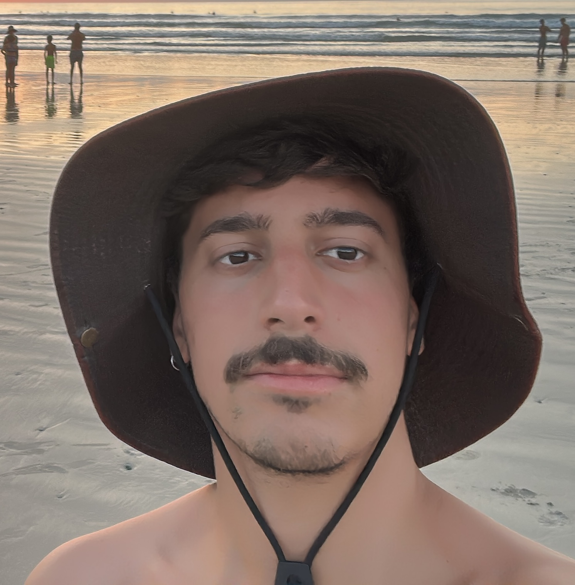
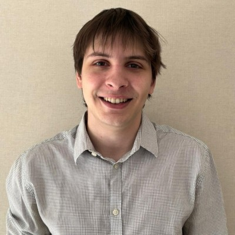
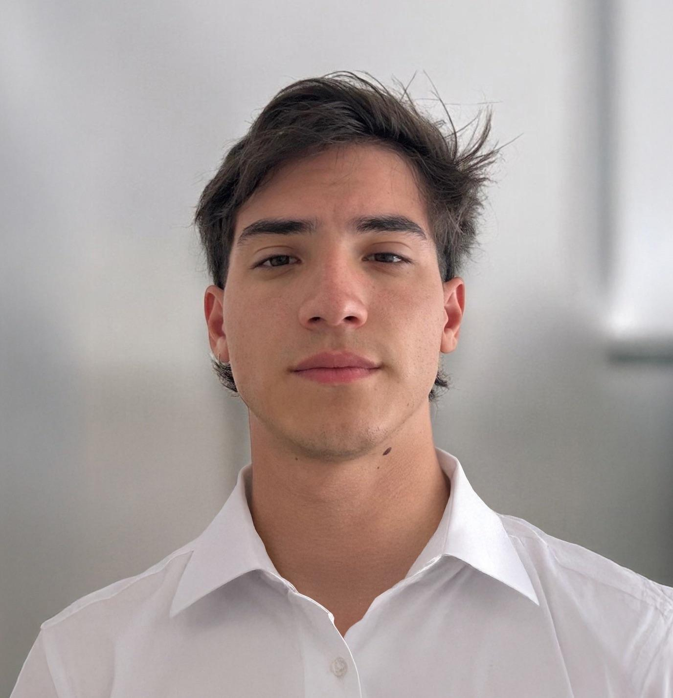
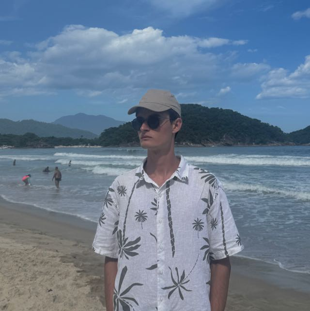

Nuestro equipo
Somos un grupo de profesionales apasionados por la tecnología y convencidos de que el buen software nace de la colaboración, la empatía y el compromiso con los detalles.

Tomás Rey
Consultor Web
Consultor en desarrollo web con enfoque en soluciones digitales modernas y funcionales. Se destaca por su creatividad, atención al detalle y capacidad para entender las necesidades de cada cliente, transformándolas en sitios web atractivos y eficientes. Trabaja de manera organizada y proactiva, priorizando siempre la experiencia del usuario y la optimización de resultados.

Matias Rosbaco
Lead de Programación
Líder técnico con foco en la coordinación y dirección de proyectos de software. Se encarga de traducir los objetivos de negocio en decisiones de arquitectura claras, guiar al equipo de desarrollo y garantizar la entrega de soluciones de calidad en tiempo y forma. Combina visión estratégica con capacidad de ejecución técnica.

Martin Benitez Potochek
Analista de Seguros y Patentes
Estudiante de la Licenciatura en Negocios Digitales con un fuerte perfil analítico y estratégico. Aporta su experiencia estructurando procesos complejos como Analista de Seguros y Patentes en el grupo logístico Barsat.
Santiago Lozano
Tester & QA
Especialista en aseguramiento de la calidad del software con foco en la detección temprana de errores y la mejora continua del proceso de desarrollo. Diseña planes de prueba, ejecuta tests funcionales y de regresión, y trabaja codo a codo con el equipo para garantizar productos robustos y libres de bugs antes de cada entrega.

Malcolm Mac Entyre
Frontend Developer & Diseñador
Desarrollador frontend y diseñador UI con ojo para los detalles visuales y pasión por crear interfaces que combinan estética y funcionalidad. Traduce conceptos en experiencias digitales atractivas, cuidando cada píxel y cada interacción para garantizar que el usuario disfrute el producto desde el primer clic.